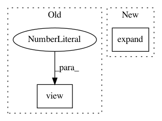

7f99fd7e1ea3f3a8b956232234b336ef410e6f91,function.py,,adaptive_instance_normalization,#Any#Any#,4
Before Change
style_std = style_feat.std(dim=2).view(N, C, 1, 1).expand(size)
style_mean = style_feat.mean(dim=2).view(N, C, 1, 1).expand(size)
content_feat_3d = content_feat.view(N, C, -1)
content_std = content_feat_3d.std(dim=2).view(N, C, 1, 1).expand(size)
content_mean = content_feat_3d.mean(dim=2).view(N, C, 1, 1).expand(size)
normalized_feat = (content_feat - content_mean) / content_std
return normalized_feat * style_std + style_mean
After Change
content_mean = content_feat.view(N, C, -1).mean(dim=2).view(N, C, 1, 1)
normalized_feat = (content_feat - content_mean.expand(
size)) / content_std.expand(size)
return normalized_feat * style_std.expand(size) + style_mean.expand(size)
def calc_feat_flatten_mean_std(feat):
// takes 3D feat (C, H, W), return mean and std of array within channels
In pattern: SUPERPATTERN
Frequency: 3
Non-data size: 2
Instances
Project Name: naoto0804/pytorch-AdaIN
Commit Name: 7f99fd7e1ea3f3a8b956232234b336ef410e6f91
Time: 2017-12-01
Author: inoue@hal.t.u-tokyo.ac.jp
File Name: function.py
Class Name:
Method Name: adaptive_instance_normalization
Project Name: interactiveaudiolab/nussl
Commit Name: a9897443682f7c0d7b894f8518ce37b8df950894
Time: 2020-01-30
Author: prem@u.northwestern.edu
File Name: nussl/deep/networks/clustering/gmm.py
Class Name: GMM
Method Name: update_likelihoods
Project Name: rusty1s/pytorch_geometric
Commit Name: 62a05d5e2611f6ec8fda2c7d7c5b57cf8b64402b
Time: 2018-01-12
Author: matthias.fey@tu-dortmund.de
File Name: torch_geometric/nn/functional/pool/pool.py
Class Name:
Method Name: max_pool